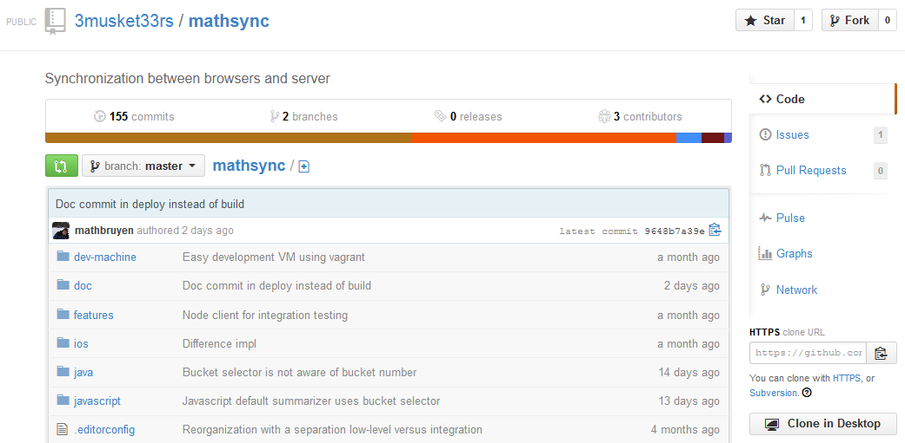

World is in conflict:
my app is online

Speakers

Interactivity
http://nodejsconfit.mais-h.eu
- Ask/rank questions to be discussed at the end
- Rate content slide by slide in real time
TODO: screenshot
Web application
Client/server
... mostly offline
Synchronization
As a client,
when I come back online,
how to synchronize with the server?
Common
No(t only) push!
Supported operations
Performed by myself and others
- Creating an item
- Modifying an existing item
- Deleting an item
Selective data model
Conflicts
Initiated by the client
- client logs offline edits
- client pushes edits
- clients pulls changes which happened on the server
Evaluation
- Bandwidth
- Roundtrips
- Computational cost
- Recovery
- Setup
Wholesale
Transfer everything!
Evaluation
- Bandwidth: O(dataset size)
- Roundtrips: 1
- Computational cost: low
- Recovery: yes
- Setup: does anyone have a simpler idea?
With versioned entities
{
type: "user",
id : 42,
version : 5,
firstName : "John",
lastName : "Smith"
/* more */
}[
{ id: 42, version: 5 }
/* more */
]Rsync
Algorithm
Versioned entities evaluation
- Bandwidth: lower but still O(dataset size)
- Roundtrips: O(changeset size)
- Computational cost: low
- Recovery: not to rogue edits
- Setup: remains ok
Timestamps
Log changes!
How to
Version identifier
- Changes whenever anything in dataset changes
- Retrieve operations between two versions
Clocks
Filters
function(doc, req) {
return (doc.type && doc.type == "foo")
}
- ???Not Full Selective Model???
- Iterate on the whole log
- Soft deletes
- Data used in filters must be immutable
Evaluation
- Bandwidth: efficient (with deduplicates)
- Roundtrips: just 1
- Computational cost: low for CPU / up to double database footprint
- Recovery: errors remain here forever
- Setup: logging infrastructure, extra field to store on clients
Couch/PouchDB
- ID
- Sequence
- Revision
- Document
- Database
- Source
- Target
- Checkpoint
Couch/PouchDB Algorithm
Mathematical approach
let's play!
given n
server: build a data structure of size O(n)
client: compute its delta from the server
if # of differences is less than 2n
if # of differences is less than 2n
Algorithm
var server, i, diff;
i = 0;
while (!diff) {
server = getFromServer(i);
diff = localStore.computeDifference(server);
i++;
}
local.applyDifference(diff);Performances
- Bandwidth: O(changeset size)
- Roundtrips: O(log(changeset size))
- Computational cost: ?
- Error correction: ?
- Setup: ?
Mathsync
Mathsync: data structure
// bucket: { hash: [], content: [], items: 0 }
var ibf = emptyBuckets(n);
items.forEach(function(item) {
var bytes = serialize(item);
buckets(bytes).forEach(function (id) {
var bucket = ibf[id % n];
bucket.hash = xor(bucket.hash, hash(bytes));
bucket.content = xor(bucket.content, bytes);
bucket.items++;
});
});Mathsync setup - server
var data = [/* ... */];
function serialize(item) {
var buffer = new Buffer(item.key + ':' + item.value, 'utf-8');
return new Uint8Array(buffer).buffer;
}
var summarizer = require('mathsync').summarizer.fromItems(data, serialize);
app.use(route.get('/summary/:level', function* (level) {
this.body = yield summarizer(level |0);
}));Mathsync setup - client
var data = [/* ... */];
function serialize(item) { /* ... */ }
function deserialize(buffer) {
var arr = new Buffer(new Uint8Array(buffer)).toString('utf-8').split(':');
return { key: arr[0], value: arr[1] };
}
function fetchSummary(level) {
return http.getJson('/summary/' + level);
}
var ms = require('mathsync');
var local = ms.summarizer.fromItems(data, serialize);
var remote = summarizer.fromJSON(fetchSummary);
var resolve = ms.resolver.fromSummarizers(local, remote, deserialize);
resolve().then(function (difference) { /* ... */ });Ahead of time computation
Errors get corrected!
Selective data model
Evaluation
- Bandwidth: O(changeset size)
- Roundtrips: O(log(changeset size))
- Computational cost: high
- Error correction: fix on next synchronization
- Setup: ?
Conclusion bullets
- Push is not sufficient
- Start simple with wholesale transfer!
- When needed move to log-based solution if its assumptions are validated
- Otherwise use the complex mathematical approach (and our library!)
Thanks!